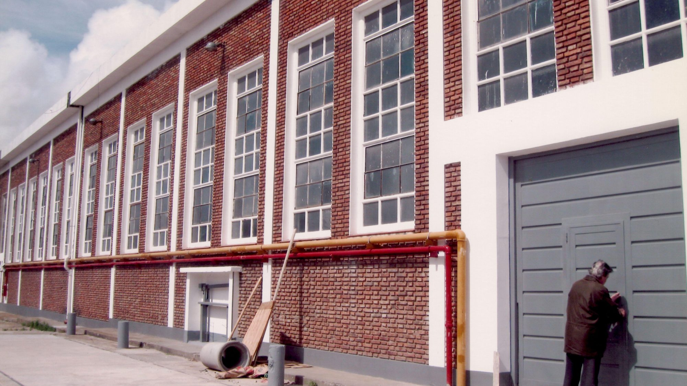

Del garaje a una planta integrada
Empezamos en 2001, en el garaje de una casa, con una vieja envasadora comprada en un remate y muchas máquinas que construimos a mano.
Nuestro primer gran cliente de marca blanca fue Walmart; con él aprendimos las exigencias del retail. De aquellos 188 m² iniciales pasamos a una planta de 3.100.
En el camino empezamos a comprar los granos y a producir nuestros propios cereales —lo que hoy nos permite sostener el mismo producto lote tras lote. Seguimos siendo una empresa familiar argentina.
A quién le fabricamos
Trabajamos con tres tipos de clientes muy distintos.
Marcas
Ya venden o están por lanzar y buscan un fabricante que sostenga su calidad y acompañe sus volúmenes.
Cadenas y retail
Supermercados y comercios que quieren desarrollar su propia línea de marca blanca.
Emprendimientos
Todavía son una idea, sin receta ni producto, y necesitan que alguien los acompañe desde el principio.

Súmate al equipo
Somos una empresa familiar que sigue creciendo. Si querés ser parte, escribinos y contanos qué sabés hacer: siempre estamos atentos a sumar buena gente.
Enviá tu CV